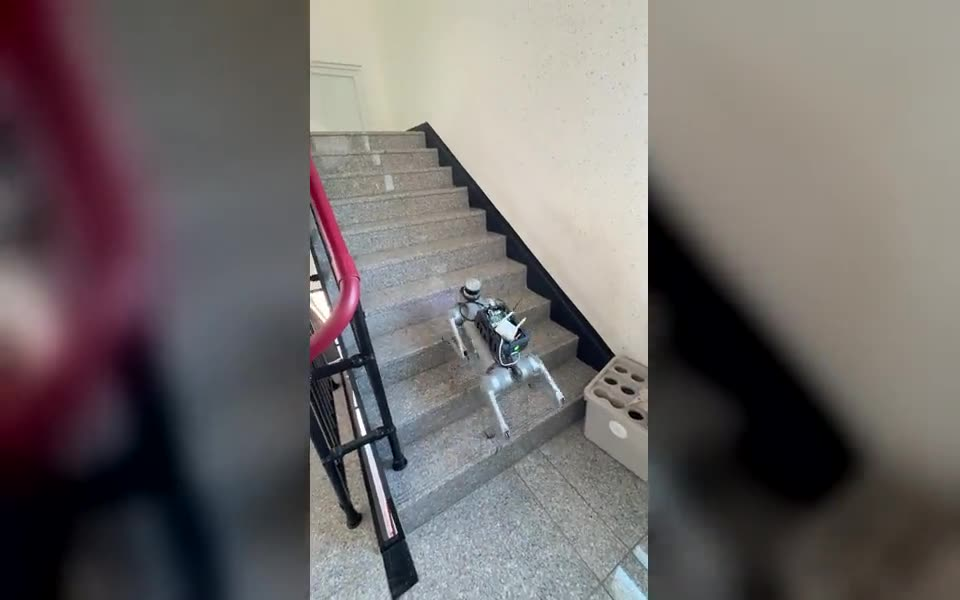
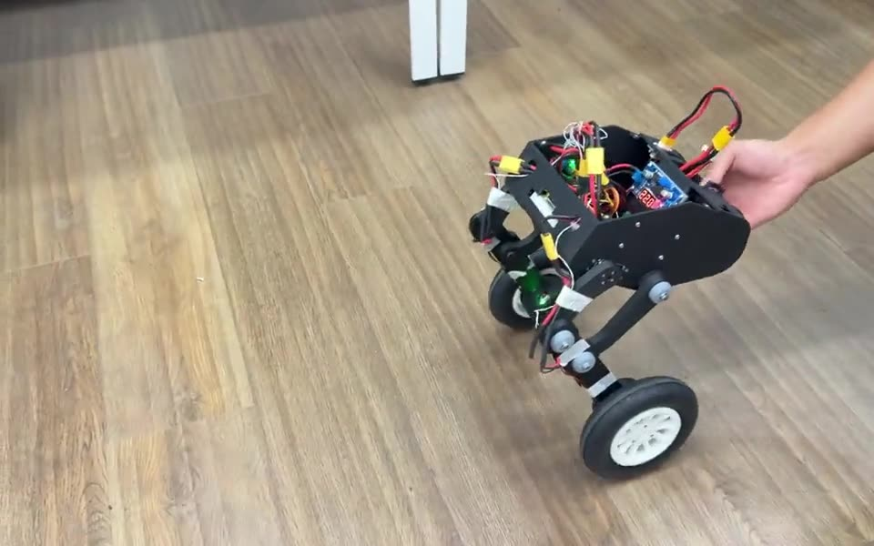
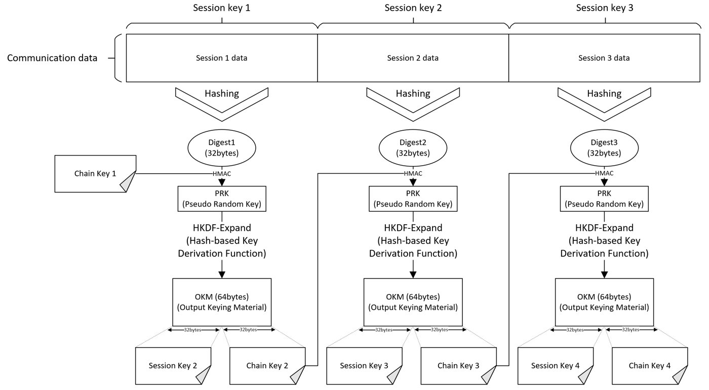
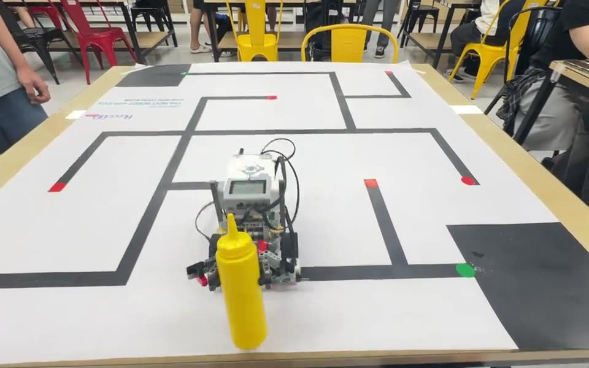
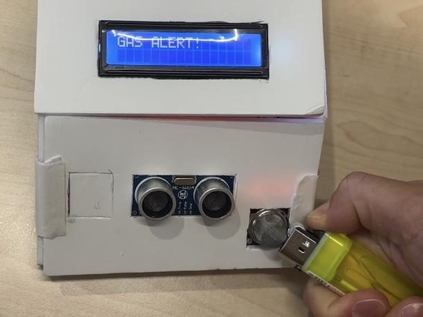

Projects
로봇, 임베디드, 보안 프로젝트 8개입니다. 카드를 누르면 구조도, 영상, 맡은 부분을 볼 수 있습니다.
-

사족보행 로봇 도그레그 계단 자율 주행
5층에서 옥상까지 계단을 올라 사진을 찍고 이메일로 보내는 실증 미션. 계단 주행을 3단계 상태 머신과 다중 안전장치로 설계했습니다.
대표 프로젝트 -

2륜 자율 균형 로봇
EKF 자세 추정과 PPO 강화학습으로 자세 오차를 PID 대비 79.5%, LQR 대비 65.6% 줄였습니다.
대표 프로젝트 -

평문 기반 대칭-라쳇 키 생성 (특허 출원)
세션 동안 주고받은 평문의 다이제스트와 체인 키로 다음 키를 만들어, 키 교환 패킷 없이 양쪽 키를 갱신하는 구조입니다.
대표 프로젝트 -

EV3 미로 탐색·객체 운반
PD 제어 튜닝, 센서 편향을 반영한 비대칭 회전, 병렬 처리로 전체 주행시간을 38.5% 줄였습니다.
대표 프로젝트 -

STM32 탈부착형 보행 보조 모듈
HAL 없이 레지스터로 ADC와 SPI를 DMA에 연결해 CPU 점유율을 95%에서 5%로 낮췄습니다. 낙상, 가스, 장애물 경보.
임베디드시스템설계 -

저전력 Edge AI 쓰레기 분류 시스템
Zybo Z7-20의 FreeRTOS 태스크 7개 위에서 MobileNetV2로 쓰레기를 분류해 뚜껑을 열고, 적재량은 웹에서 봅니다. 분류 정확도 72.3%.
임베디드시스템설계 -

AI 지상 감시·정밀 타격 시스템
Arduino 위에 직접 구현한 TinyMLP로 표적을 판별하고, 안전 게이트와 연속 충족 조건, 쿨다운으로 오발을 막았습니다.
임베디드시스템설계 -

지능형 자동 관수 장치
토양 물성과 작물별 허용 고갈률로 관수 시점을 계산하고, 관수 후 습도를 다시 재서 펌프 세기를 스스로 맞추는 장치. 최우수상.
전공디깅
검색 결과가 없습니다.